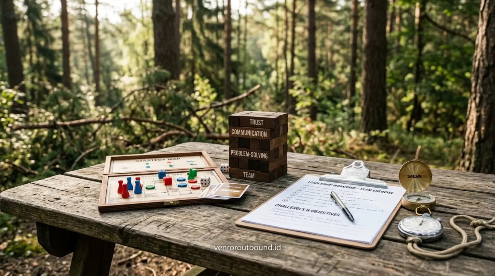

Tantangan terbesar yang sering dihadapi oleh manajemen Human Resources (HR) dan divisi People Development adalah menyiapkan calon pemimpin yang tangguh pada level supervisor dan manager. Ketika seorang staf berkinerja tinggi dipromosikan menjadi team leader, keterampilan teknis fungsional saja tidak lagi mencukupi. Mereka dituntut memiliki kecerdasan emosional, kemampuan mendelegasikan tugas, ketegasan dalam mengambil keputusan, serta keterampilan berkomunikasi lintas fungsi.
Kegiatan outbound bagi korporasi bukan sekadar rekreasi santai atau gathering tanpa arah. Melalui program outbound leadership training yang terstruktur, organisasi dapat mematangkan kesiapan talenta manajerial dalam menghadapi dinamika kerja yang sarat target dan perubahan.
1. Tinjauan Paket Outbound Leadership Training dari Vendor Outbound
Paket outbound leadership training dari Vendor Outbound dirancang sebagai program pengembangan kepemimpinan melalui simulasi strategis, aktivitas kelompok, fasilitasi, dan evaluasi. Program dapat disesuaikan untuk manager dan supervisor berdasarkan tujuan organisasi, profil peserta, durasi, lokasi, serta tingkat kompleksitas tantangan yang ingin disimulasikan.
Komponen program dapat mencakup fasilitator bersertifikasi, modul pelatihan, peralatan simulasi problem solving, venue outdoor berhawa sejuk, konsumsi, dan lembar evaluasi observasi peserta, tergantung paket serta kesepakatan penawaran yang disetujui. Kami memposisikan diri sebagai mitra strategis perusahaan yang membantu menerjemahkan nilai-nilai inti (core values) dan sasaran kompetensi organisasi ke dalam skenario simulasi nyata di lapangan.
Melalui pendekatan experiential learning yang mendalam, setiap sesi dirancang bukan sekadar untuk menguji ketangkasan fisik, melainkan mengeksplorasi proses berpikir logis, komunikasi asertif, pengelolaan stres, dan keselarasan visi antarpemimpin lini depan.
2. 8 Pilar Tujuan Pengembangan Kompetensi Kepemimpinan
Setiap rangkaian tantangan yang dihadirkan dirancang untuk mengasah delapan pilar kompetensi manajerial utama:
- 1. Leadership Awareness (Kesadaran Kepemimpinan): Memahami gaya kepemimpinan pribadi, mengenali kekuatan karakter, serta memetakan area pengembangan diri secara jujur.
- 2. Tactical Decision Making (Pengambilan Keputusan Taktis): Melatih ketenangan dan ketajaman logika dalam memilih solusi terukur saat dihadapkan pada batas waktu dan keterbatasan data.
- 3. Problem Solving Agility (Ketajaman Pemecahan Masalah): Menemukan akar permasalahan tanpa terjebak pada asumsi awal atau perdebatan kusir yang menguras energi tim.
- 4. Assertive Communication (Komunikasi Asertif): Menyampaikan instruksi kerja dengan lugas, mendengarkan masukan bawahan, dan memastikan pesan dipahami secara utuh.
- 5. Effective Delegation (Pendelegasian Efektif): Membagi wewenang dan tanggung jawab sesuai kapasitas anggota tim tanpa kehilangan kontrol terhadap kualitas akhir.
- 6. Cross-Functional Teamwork (Kolaborasi Lintas Fungsi): Membongkar sekat ego sektoral antardivisi dan membangun kesadaran akan kesuksesan bersama.
- 7. Mutual Accountability (Akuntabilitas Bersama): Berani bertanggung jawab atas hasil kerja tim tanpa mencari kambing hitam atas kegagalan eksekusi.
- 8. Strategic Thinking (Wawasan Berpikir Strategis): Melihat gambaran besar (big picture) tujuan bisnis di balik rutinitas tugas operasional harian.
3. Sasaran Profil Peserta: Manager, Supervisor, & Talent Pipeline
Program kepemimpinan ini dirancang dengan tingkat kompleksitas bertingkat yang dapat disesuaikan untuk beberapa jenjang audiens korporat:
| Jenjang Audiens | Fokus Tantangan Utama | Ekspektasi Output Pembelajaran |
|---|---|---|
| First-Line Supervisor / Team Leader | Transisi dari eksekutor menjadi pemandu tim, komunikasi instruksional, manajemen konflik harian | Ketegasan memimpin rekan sebaya, kemampuan coaching dasar, kontrol emosi |
| Middle Manager / Head of Department | Sinergi lintas fungsi, alokasi sumber daya terbatas, mitigasi risiko operasional | Pencairan silo antardivisi, integrasi strategi departemen, delegasi terstruktur |
| High-Potential Talent (MDP / MT) | Ketahanan mental (grit), inovasi pemecahan masalah krisis, inisiatif kepemimpinan | Kesiapan memasuki talent pipeline manajerial masa depan perusahaan |

4. Contoh Struktur 6 Modul Pelatihan Kepemimpinan Luar Ruang
Berikut adalah contoh struktur kurikulum modul yang dapat dirancang dan disesuaikan dengan kebutuhan pengembangan SDM di perusahaan Anda:
- Modul 1 — Leadership Alignment & Trust Building: Sesi pembuka untuk menyelaraskan persepsi kepemimpinan, menumbuhkan keterbukaan emosional, dan mencairkan kekakuan hierarki formal. Peserta diajak menyadari peran kepemimpinan yang suportif.
- Modul 2 — Strategic Decision Making Simulation: Menghadapi skenario berbasis batas waktu yang menuntut analisis cepat dan pembagian peran yang terukur. Menguji ketahanan mental terhadap ambiguitas informasi.
- Modul 3 — Creative Problem Solving & Resource Optimization: Memecahkan teka-teki logika kelompok dengan sumber daya fisik terbatas guna menguji kreativitas tim dan kemampuan berpikir di luar kebiasaan (out-of-the-box).
- Modul 4 — Closed-Loop Communication & Feedback: Melatih komunikasi dua arah yang presisi di tengah suasana kebisingan dan tekanan target, serta membangun budaya saling memberi umpan balik konstruktif.
- Modul 5 — High-Impact Delegation Challenge: Simulasi bertingkat di mana leader diuji kemampuannya memberikan wewenang penuh kepada bawahan tanpa melakukan intervensi micromanagement.
- Modul 6 — Guided Debriefing & Individual Action Plan: Sesi refleksi mendalam bersama fasilitator untuk merumuskan komitmen tindakan kerja nyata dan roadmap implementasi pasca-acara di kantor.
5. Keunggulan Suasana Pegunungan Batu Malang untuk Program Leadership
Kawasan Batu Malang di Jawa Timur telah lama dikenal sebagai salah satu destinasi utama untuk program pengembangan SDM korporasi di Indonesia. Lingkungan alam pegunungan menawarkan sejumlah keunggulan alamiah yang mendukung efektivitas belajar:
- Udara Pegunungan yang Sejuk & Menyegarkan: Suhu udara yang nyaman dan sejuk membantu menjaga konsentrasi kognitif serta stamina fisik peserta sepanjang hari tanpa cepat merasa lelah atau jenuh.
- Ruang Terbuka Hijau yang Luas: Tersedianya area lapang rumput alami di lereng pegunungan memberikan fleksibilitas tinggi untuk menggelar berbagai variasi simulasi bertingkat berskala besar.
- Pemisahan dari Distraksi Rutinitas Kantor: Lokasi yang tenang dan jauh dari kebisingan kota menciptakan atmosfer retreat yang sangat kondusif bagi peserta untuk berkontemplasi dan membangun kedekatan emosional bersama rekan kerja.
6. Contoh Rundown Program Outbound Leadership 1 Hari (One-Day Intensive)
Berikut adalah contoh susunan jadwal (rundown) yang bersifat ilustratif untuk program intensif satu hari:
| Waktu (WIB) | Agenda Kegiatan | Fokus Aktivitas & Target Kompetensi |
|---|---|---|
| 08.00 — 08.30 | Registrasi & Safety Briefing | Pemeriksaan kehadiran, pengenalan fasilitator, sosialisasi SOP K3 |
| 08.30 — 09.00 | Ice Breaking & Group Dynamics | Pencairan suasana, pembentukan regu, penentuan komitmen kelompok |
| 09.00 — 10.30 | Leadership Challenge Session 1 | Simulasi Leadership Alignment & Trust Building |
| 10.30 — 11.00 | Guided Reflection & Debriefing 1 | Evaluasi pola komunikasi dan gaya kepemimpinan awal |
| 11.00 — 12.30 | Problem Solving Simulation 2 | Tantangan Decision Making under Time Constraint & Resource Scarcity |
| 12.30 — 13.30 | Ishoma (Makan Siang & Istirahat) | Networking santai antarsesama peserta dan fasilitator |
| 13.30 — 15.00 | Strategic Team Challenge 3 | Simulasi pendelegasian wewenang dan kolaborasi lintas fungsi |
| 15.00 — 15.30 | Comprehensive Evaluation | Pemaparan hasil observasi fasilitator dan self-assessment peserta |
| 15.30 — 16.00 | Action Plan Commitment & Closing | Perumusan komitmen kerja konkret di kantor, penutupan resmi, foto bersama |
*Catatan: Susunan rundown di atas merupakan contoh ilustratif dan dapat disesuaikan berdasarkan jumlah peserta, lokasi venue yang dipilih, durasi yang diinginkan, serta tujuan khusus program perusahaan Anda.
7. Tata Kelola Evaluasi Peserta & Standar Keselamatan (K3)
Program pengembangan SDM yang berkualitas wajib didukung oleh instrumen evaluasi yang objektif serta kepatuhan terhadap standar keselamatan luar ruang:
Instrumen Evaluasi Pasca-Program:
- Facilitator Observation Sheet: Catatan observasi objektif fasilitator mengenai perilaku kepemimpinan, dinamika komunikasi, dan respons stres masing-masing kelompok selama simulasi.
- Participant Self-Assessment: Lembar refleksi mandiri bagi peserta untuk mengevaluasi kesadaran kepemimpinan, gaya interaksi personal, dan area perbaikan diri.
- Individual Action Plan: Dokumen komitmen tertulis yang dibawa pulang oleh peserta untuk diterapkan langsung di unit kerja masing-masing dalam kurun waktu 30-90 hari pasca-pelatihan.
Tata Kelola Keselamatan & Mitigasi Risiko:
Kegiatan luar ruang menuntut kepatuhan SOP yang disiplin. Seluruh program didukung oleh briefing keselamatan pra-kegiatan, pemeriksaan kondisi venue secara berkala, rasio fasilitator pendamping yang memadai, ketersediaan kotak P3K outdoor lengkap, serta rencana tanggap darurat (Emergency Response Plan) yang terkoordinasi dengan fasilitas kesehatan terdekat.
8. Tahapan Perancangan Program & Training Needs Analysis (TNA)
Untuk memastikan program yang dirancang benar-benar menjawab kebutuhan spesifik perusahaan, tim kami menerapkan alur kerja konsultatif terstruktur:
- Discovery & Training Needs Analysis (TNA): Wawancara awal dengan tim HR untuk memetakan sasaran kompetensi, isu relasi tim, dan profil demografi peserta.
- Curriculum & Scenario Customization: Penyusunan draf skenario simulasi, penyesuaian rintangan, dan pemilihan venue outdoor di Batu Malang yang representatif.
- Program Execution & Facilitation: Pelaksanaan kegiatan luar ruang dipandu oleh tim fasilitator profesional yang fokus pada keselamatan dan dinamika kelompok.
- Post-Event Evaluation Report: Penyusunan laporan evaluasi komprehensif berisi rangkuman observasi perilaku, dinamika regu, dan rekomendasi tindak lanjut bagi manajemen perusahaan.
Dapatkan Proposal Kustom Outbound Leadership
Dapatkan proposal kustom outbound leadership perusahaan Anda sekarang via WhatsApp +62 82211221909.
Minta Proposal via WhatsApp9. Kesimpulan & Cara Meminta Penawaran Proposal Kustom
Mempersiapkan supervisor dan manager dengan kompetensi kepemimpinan yang matang adalah investasi strategis yang menentukan keberlanjutan bisnis jangka panjang. Melalui paket outbound leadership training di kawasan Batu Malang, perusahaan dapat memberikan pengalaman pembelajaran yang berbobot, aplikatif, sekaligus menyegarkan semangat kerja tim.
Tim konsultan kami siap berdiskusi untuk merumuskan silabus kurikulum, jadwal kegiatan, dan skema penawaran yang paling sesuai dengan target kompetensi serta anggaran organisasi Anda.
Pertanyaan Sering Diajukan (FAQ)

Arby Ardiansyah
Arby Ardiansyah memfokuskan keahliannya pada desain kurikulum outbound korporat, pemodelan simulasi bisnis luar ruang, dan asesmen kepemimpinan terapan di Indonesia.